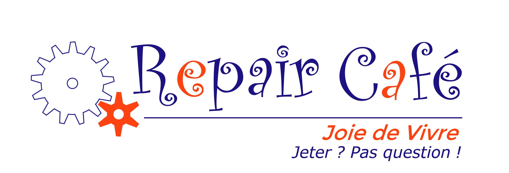

Foire Aux Questions

La garantie d’un objet est-elle maintenue après réparation ?
Non, nous vous conseillons vivement de faire marcher votre garantie auprès de la structure par laquelle vous avez acheté votre produit.
Faut-il être membre de l’association pour faire réparer un appareil ?
Non, vous êtes libre de venir avec votre appareil.
Faut-il payer les réparations ?
Votre appareil sera pris en charge par l’un de nos bénévoles spécialisés. Seul reste à votre charge l’achat des pièces détachées (voir règlement).
Si le matériel n’est pas réparable, que dois-je faire ?
Vous êtes responsable de l’élimination appropriée des objets cassés irréparables.
Puis-je amener une machine à laver pour réparation ?
Non, nous ne prenons en charge que le petit électroménager. Toutefois, vous pouvez poser votre question sur notre page Facebook : un bénévole pourra vous orienter selon l’appareil.